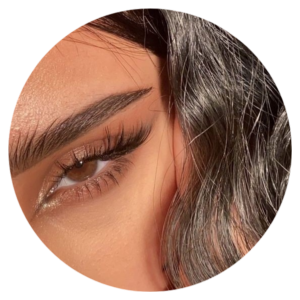

Топові процедури
Збільшення губ – це сучасний спосіб зробити зовнішність яскравішою і наблизитися до власного ідеалу краси. Суть цього революційного нехірургічного методу збільшення губ полягає у введенні ін’єкцій препаратів, які містять гіалуронову кислоту. Така процедура є максимально безпечною і простою, тому набирає все більшої популярності.
Ламінування брів – процедура, яка полягає в почерговому нанесенні на волоски брів різних складів. Їх завдання – надати навіть самим неслухняним волоскам правильний напрямок, зафіксувати акуратну форму брів, затемнити брови (фарбування в більш виразний відтінок).
Нарощуванні вій — це сучасна процедура в косметології, яка дозволяє значно збільшити довжину, об’єм вій, форму вій. За допомогою нарощування вій можна досягнути ефекту більш виразного погляду, так званого, лялькового погляду, та багато інших ефектів.
| Procedure | Price |
|---|---|
| Ламінування вій | 600грн |
| Нарощування вій | 1200грн |
| Брови татуаж | 2800грн |
| Ламінування брів | 400грн |
| Ін’єкцій в губи | від 1800грн |
Про нас
Творча команда салону краси «Falicie» Секрет популярності салону «Falicie» - дружна команда б'юті-фахівців. Вона постійно вдосконалюється, щоб допомагати клієнтам із задоволенням перетворюватися в улюблені образи і грати головні ролі. Тим, хто все ще знаходиться в творчому пошуку, стилісти пропонують варіанти завершення «п'єси», додаючи відсутні деталі у вигляді гарних війок та пухких губ. Працюючи над іміджем клієнтів, стилісти залишаються акторами «другого плану». Вони мають майже магічною здатністю вгадувати навіть невисловлені бажання клієнтів з витонченим смаком і можуть допомогти максимально втілити їх, використовуючи кращі косметичні засоби і технологічні новинки. Між членами творчої команди б'юті-салону існують дуже теплі відносини. У такій майже сімейній атмосфері дуже легко мріяти і творити!